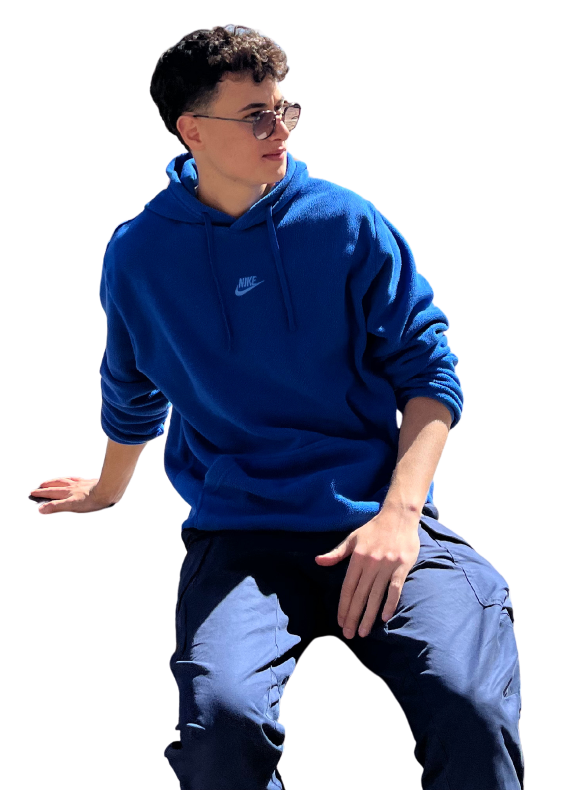
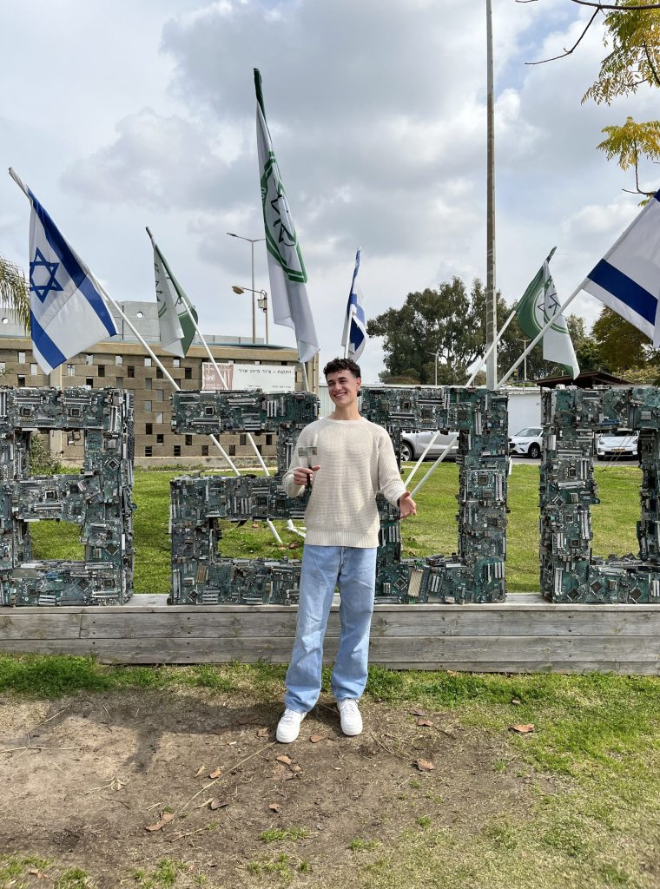
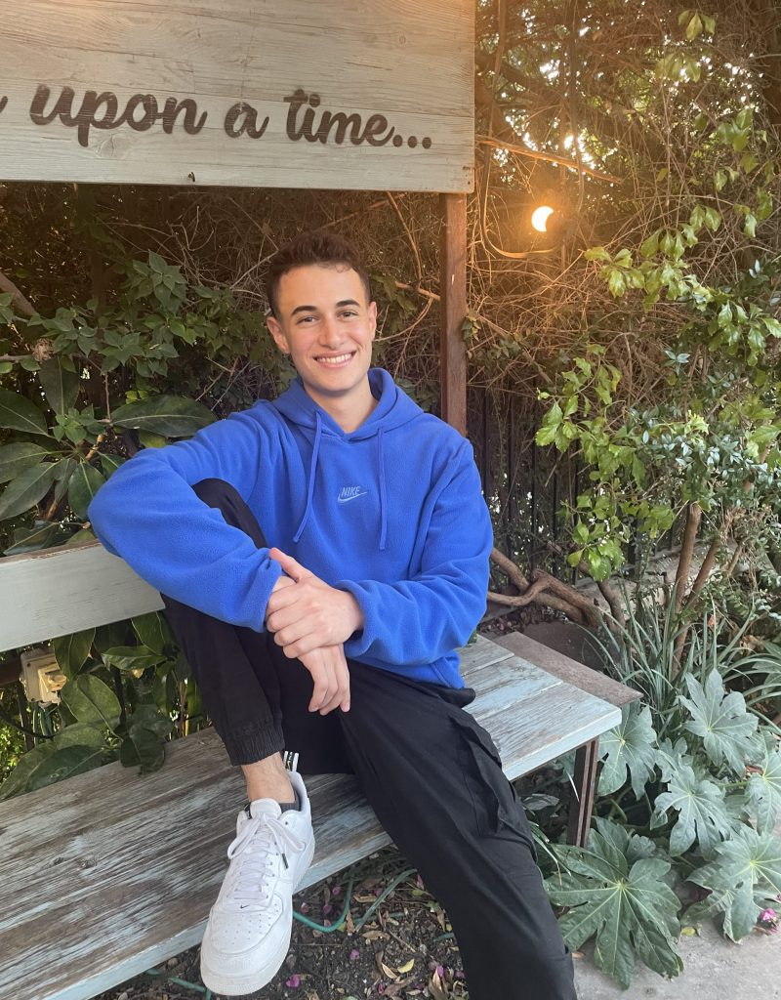

לאורך הדרך עברתי המון.
הפסדתי הרבה כסף, ניסיתי מלא תחומים חדשים, נכשלתי אינספור פעמים.
לפני שלוש שנים עשיתי את המכירה הראשונה שלי, והיום אני בעלים של מספר מותגים עם מעל 7 ספרות בהכנסה.
והכי כיף, אני יודע שאני רק בתחילת הדרך שלי.


נעים להכיר, עידו הירש.
בן 23, יזם, בעלים של מספר מותגי איקומרס, מעל ל-3 שנות ניסיון בתחום ומעל 7 ספרות בהכנסה.
לפני שלוש שנים, תוך כדי 3+ שנות שירות ביחידה 8200 ומסלול ישיר להייטק, החלטתי לעשות שינוי כיוון.
תמיד בער בי לעשות כסף.
מגיל קטן ניסיתי כל מיני יוזמויות – למכור ספריי שלג ביום העצמאות, לקנות ביטקוין בגיל 14 עם עוד כמה חברים, למכור אופניים באיביי.
ניסיתי הכל, אבל אף פעם לא לקחתי את זה 100% ברצינות, תמיד זה היה דבר משני למשהו עיקרי אחר.
בין אם זה הלימודים, החברים, משחקי המחשב או הכדורסל ששיחקתי באופן מקצועי מעל עשור ואפילו שיחקתי בנבחרת ישראל.
שנה לתוך השירות הצבאי שלי, נכנסתי לשגרה ופתאום נהיו לי שעתיים פנויות ביום.
עד היום אני גאה בהחלטה הזאת ולא יודע להסביר אותה, אבל משהו בי פשוט אמר לי שזאת ההזדמנות שלי.
לקחתי את הסיכון, השקעתי, חקרתי ולמדתי שעות על איקומרס, ותוך כמה חודשים הקמתי את המותג הראשון שלי.
לפני שלוש שנים עשיתי את המכירה הראשונה שלי, והיום אני בעלים של מספר מותגים, עם מעל 7 ספרות בהכנסה.
לאורך הדרך עברתי המון.
הפסדתי הרבה כסף, ניסיתי המון תחומים חדשים, התגברתי על המון קשיים, והכרתי המון אנשים ויזמים מעוררי השראה.
הרבה עליות ומורדות שהביאו אותי לאן שאני היום, ופתחו לי דלתות ליוזמויות גדולות בהן אני יוזם היום.
אני כותב את כל זה בעיקר בשביל עצמי.
לפעמים חשוב לעצור רגע ולהגיד תודה על איפה שאני נמצא.
אבל הכי כיף, אני יודע שאני רק בתחילת הדרך שלי.
"Some people want it to happen, some wish it would happen, others make it happen." – Michael Jordanחזרה למעלה
